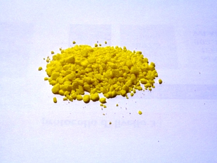

Avete presente quel libro estremamente inquietante di Golding (premio Nobel 1983) che è "Il signore delle mosche"?
La sua testa di maiale circondata da immondi insetti riproducentisi a raffica mi avvicina per associazione di idee ad un problema che ben conosco, e che c'entra... con l'amore delle mosche e la sua chimica!
Altrocchè se amano le mosche... non ditelo a me che ho appunto un contenzioso pluriennale con questi maledetti ditteri (Quarta piaga d'Egitto!) che costituiscono un fastidio per chi spesso vive in un contesto, per altri versi magnifico, ma che è anche sede di allevamenti agricoli.
Anche se oggi ne hai ammazzato un milione (di mosche, dico), moltiplica il rimanente per il centinaio di uova che una sola di esse domani produrrà, ed ecco che poco dopo ti ritrovi col milione di prima ancora vivo e svolazzante, come niente fosse successo... e permettetemi di esagerare un po', ma mica poi tanto.
Dove voglio arrivare, visto che qui per lo più si sporcano provette e non si discute di entomologia?
Ad un prodotto delizioso per le mosche (soprattutto se maschi!), il tricosene.
Lo Z-9-tricosene, che dal nome giureresti che è un prodotto contro la caduta dei capelli, è invece un idrocarburo a 23 atomi di carbonio, insaturo sul carbonio 9.
Cosa avrà di così speciale per piacer tanto a questi fastidiosi insetti? Piace perchè è un loro ferormone, ovvero un attrattivo relazionale di tipo sessuale che secernono le femmine per attrarre i maschietti che svolazzano loro intorno (e talvolta anche intorno a me, che non assomiglio nemmeno vagamente ad una femmina di mosca).
[Ci sarebbe da star qui a discutere una giornata sulle mosche e sul loro comportamento, che se le osservi bene e a lungo sembrano far fessi perfino i principi della termodinamica... Dove sei Piero Angela? Sempre alle prese con gli animali della savana? Ma li vuoi lasciar perdere una buona volta e parlarci delle bestie nostrane, mille volte più vicine e interessanti?]
Ecco la formula del Z-tricosene:

Non parlerò di ferormoni e della loro azione, dato che c'è già chi lo fa infinitamente meglio di me; più consono a questo blog è far vedere come si potrebbe produrre una sostanza del genere, che con il suo lungo corpaccio metilenico sembra un lombrico senza testa nè coda.
I metodi sono diversi, da quello biochimico a quello elettrolitico ed elegante di Kolbe (ah, Kolbe, Kolbe... ricordo di un'esperienza fallita!), a tanti altri; si tratta in genere di riuscire ad unire due catene a diverso numero di atomi di carbonio in modo che la somma sia 23, col doppio legame nel posto giusto... più facile a dirsi che a farsi, ovviamente.
Una bella procedura molto "chimica" è la seguente (l'ho presa, estendendola un po' all'inizio, da Tse-Lok/Chiu Ming Won, 1973): si parte dall'alcol oleico (C-18), che ha proprio un bel doppio legame in posizione 9: perfetto!
Semplifico tutte le reazioni, tralasciando naturalmente i meccanismi.
Si trasforma innanzitutto l'alcol oleico in alogenuro alchilico (per esempio con tionilcloruro):
SOCl2
CH3-(CH2)7-CH=CH-(CH2)8-OH ----------->
CH3-(CH2)7-CH=CH-(CH2)8-Cl
e poi l'alogenuro in oleonitrile (con cianuro alcalino):
NaCN
CH3-(CH2)7-CH=CH-(CH2)8-Cl ------------>
CH3-(CH2)7-CH=CH-(CH2)8-CN
Avuto il nitrile, lo si tratta con un Grignard a 5 carboni (n-pentilmagnesio bromuro, da 1-bromopentano e magnesio in etere), seguito da idrolisi acida; si origina il chetone Z-trico-14-en-6-one, che ha i 23 atomi di carbonio come richiesto.
Fusione riuscita! Avendo letto la procedura, confermo che la reazione è fattibile e fornisce buone rese.
n-CH3-(CH2)4-MgBr - H+
CH3-(CH2)7-CH=CH-(CH2)8-CN ----------------------------->
CH3-(CH2)7-CH=CH-(CH2)7-CO-(CH2)4-CH3
Leggermente più impegnativa, ma non tanto, è poi la riduzione del chetone ad idrocarburo (il carbonile passa ad un metilene) utilizzando idrato di idrazina in glicol e in ambiente fortemente basico.
NH2-NH2 - H2O -OH
CH3-(CH2)7-CH=CH-(CH2)7-CO-(CH2)4-CH3 ------------------->
CH3-(CH2)7-CH=CH-(CH2)7-CH2-(CH2)4-CH3

Per estrazione con etere si ricava finalmente lo Z-9-tricosene, sempre con buone rese.
Come mi piacerebbe fare tutta questa sintesi!
Con un po' di impegno sarebbe alla portata.
So però che non la farò mai perchè mi mancano i reagenti, ed oggi i reagenti sono diventati troppo costosi.
Domani, con la gente che ci ritroviamo, lo saranno ancor di più. (Evviva l'ottimismo, ma questo è un altro discorso).
E le nostre mosche?
Naturalmente il tricosene, essendo un ferormone, alle mosche PIACE ASSAI, e quindi avendo a disposizione questa olefina potremo attirarle irresistibilmente e gabbarle a tradimento mentre credono di...
Bene! Basta mescolare al tricosene qualcosa di zuccheroso ed un adatto veleno per mosche (un carbammato, un piretroide o quello che volete a piacere) ed il gioco è fatto, dato che lo scopo è liberare certi ambienti da questi dannosi e fastidiosissimi insetti, soprattutto negli allevamenti agricoli dove si possono riprodurre in quantità veramente incontrollabile e dannosa a uomini e animali.
La nostra beneamata chimica vince sulla mosca sfruttando subdolamente l'amore allora?
Beh, nel caso delle nostre amiche volanti si tratta solo di sesso instintuale e non certo di amore, ma il giochino di parole ci può stare.
Quella chimicaccia da laboratorio che ho tentato di esemplificare producendo un ferormone si mostra più sottile di quanto sembri: può mettersi in mezzo alla grande riescendo a ingannare a fin di bene perfino la natura, i suoi odori, i suoi istinti.
Ventunesimo Carnevale della Chimica, su QdD di Paolo Pascucci.